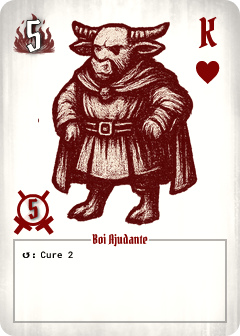
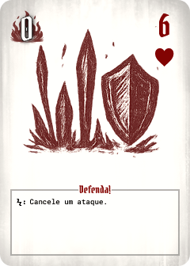
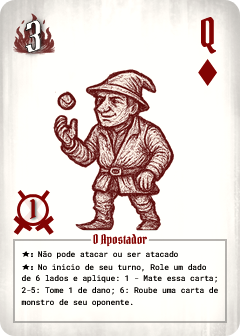
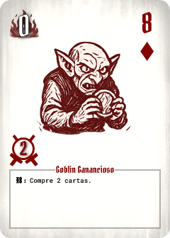
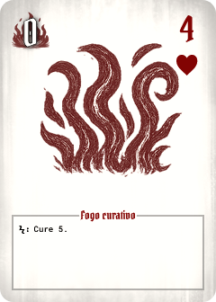
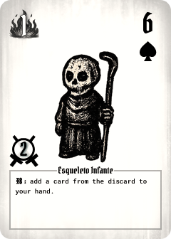
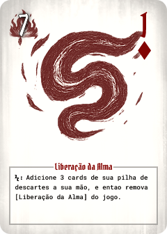
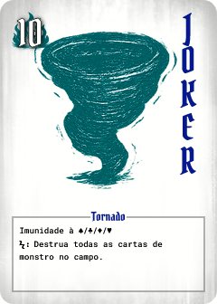

Mudanças: Não pode mais reviver outro Anjo.

Mudanças: Cura diminuida de 5 -> 2

Mudanças: Redução de custo de 1 -> 0
Mudanças: Removido habilidade de roubar cartas

Mudanças: Efeito agora é obrigatorio, e a proesa foi corrigida/aumentada de 0 ->
1

Mudanças: Redução de custo de 2 -> 0

Mudanças: Redução de custo de 1 -> 0
Mudanças: Efeito retrabalhado

Mudanças: Efeito trocado ao invés de fazer o oponente descartar uma carta, adiciona cartas do
cimiterio à mão
Mudanças: Efeito trocado para uma vez por turno ressucitar uma carta de esqueleto

Mudanças: Custo aumentado de 1 -> 7, numero de cartas recuperadas diminuido de 4 ->
3

Mudanças: Imunidade para todos os naipes nos 2 JOKER's